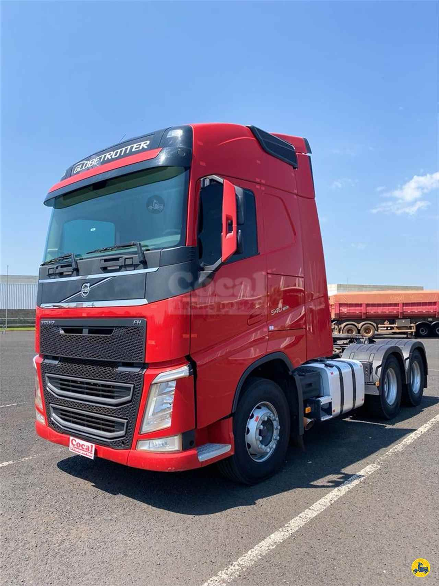

A tecnologia tem transformado de maneira significativa a vida do agricultor do Paraná. Com o uso de tecnologias desenvolvidas nas cidades que veem uso no campo do Paraná.
No Paraná, a integração da tecnologia entre a cidade e o campo é de alto benefício para agricultores, trazendo benefícios desde o plantio e colheita de grãos até o monitoramento de gado.
O crescimento é um ciclo onde a tecnologia traz resultados para o agricultor, e é com esse resultado que são feitos novos investimentos na área, criando assim um ciclo de desenvolvimento no campo.
Estudos mostram que o setor da agricultura digital deve crescer 183% até 2026, porcentagem que de dados que refletem o uso da tecnologia desenvolvida na cidade e que tem sido usada no campo do estado.
A transformação tecnológica no Paraná é visível tanto nas áreas urbanas quanto rurais, refletindo uma crescente integração entre as duas esferas. Nas cidades, a tecnologia está sendo usada para melhorar a eficiência dos serviços públicos, como no caso de sistemas de iluminação pública controlados remotamente e plataformas de gestão de resíduos.
